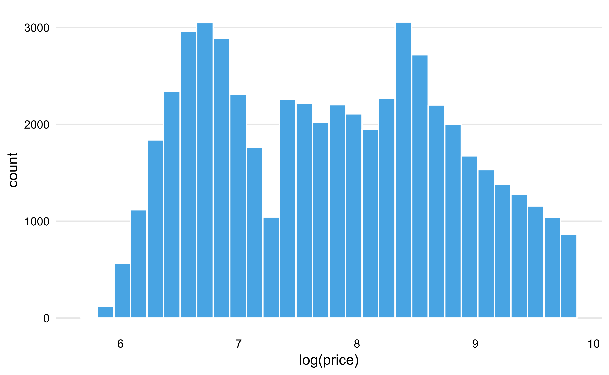
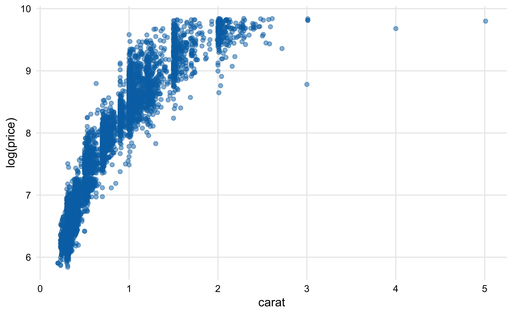
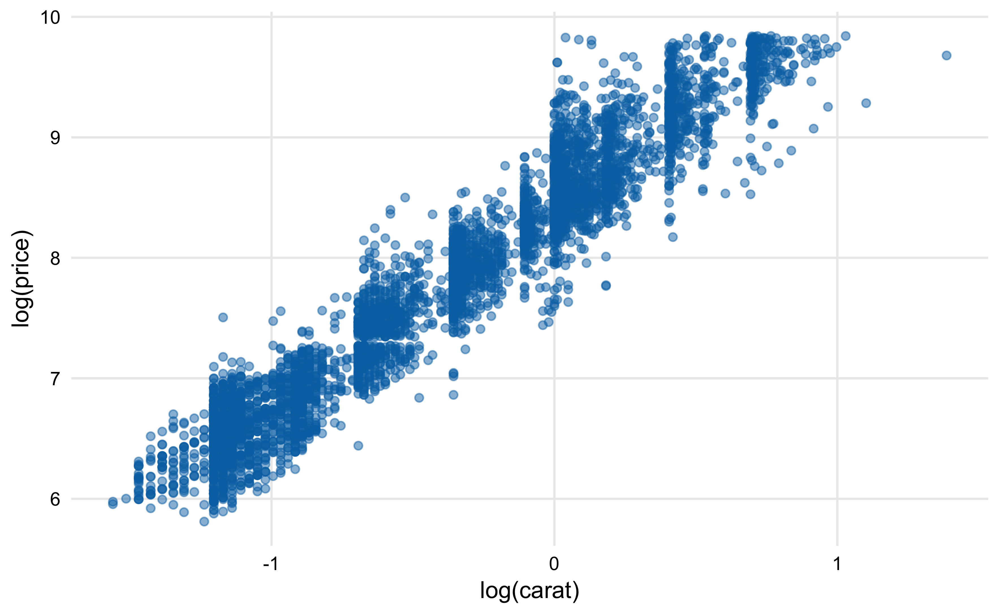
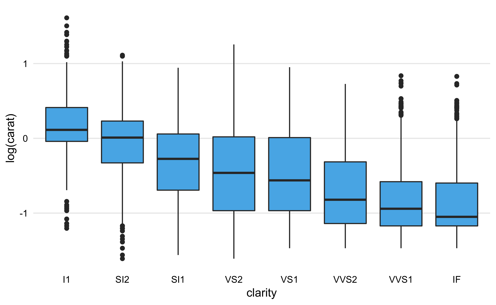

私は探索的にデータを見てく段階では、可視化に加えて複数の回帰モデルを作成して比較をする、ということをよくやっています。 モデルの数が少ない場合は個別にモデルを作成してsummary()で見ていく事もできますが、モデルの数が増えるにつれてそのやり方では管理が難しくなってきます。 そこで、本記事では、purrrのmap()とbroomのtidy(), glance()を用いて複数の回帰モデルを効率的に扱う方法を紹介したいと思います。
まずはライブラリを読み込みます。tidyverseはおなじみのデータハンドリングと可視化のためのパッケージ群です。tidymodelsはモデリングをtidyなやり方で統一的に扱えるようにするパッケージ群になります。今回はbroomのみ用いますが、後日他のパッケージの紹介記事も書ければと思っています。
library(rmarkdown) #paged_table()用
library(tidyverse)
library(tidymodels)
# 可視化用
theme_scatter = theme_minimal() +
theme(panel.grid.minor = element_blank())
theme_minimal2 = theme_scatter +
theme(panel.grid.major.x = element_blank())
skyblue = "#56B4E9"データセットはこれまたおなじみのdiamondを使います。 詳細は?diamondsを見て頂ければと思いますが、ダイヤの重さ(carat)や透明度(clarity)とその値段(price)などが入ったデータセットになります。 今回はこのデータセットを用いて、ダイヤの属性がダイヤの値段にどんな影響を与えるのかを探索することにします。
まずはアウトカムである価格の分布を見てみましょう。
df = diamonds #面倒なので名前をdfに
df %>%
ggplot(aes(price)) +
geom_histogram(fill = skyblue) +
theme_minimal2ものすごく歪んだ分布をしていますね。 歪んだ分布への簡便な対応策として、今回は対数を取ることにします。
df %>%
ggplot(aes(log(price))) +
geom_histogram(fill = skyblue) +
theme_minimal2
きれいな正規分布とまではいきませんが先程よりは中心によった分布になりましたので、今後は価格は対数を取ることにします。
次にダイヤの属性と値段の関係を見ていきましょう。 たとえばダイヤが重ければ重いほど（大きければ大きいほど）値段は高くなりそうです。
df %>%
sample_frac(0.1) %>% #データが多いので減らす
ggplot(aes(carat, log(price))) +
geom_point(color = skyblue, alpha = 0.5) +
theme_scatter
実際に可視化してみると、どうやらこの仮説は正しそうです。 ただ、carat とlog(price)の関係は非線形に見えます。 caratにも対数をとってみましょう。
df %>%
sample_frac(0.1) %>% #データが多いので減らす
ggplot(aes(log(carat), log(price))) +
geom_point(color = skyblue, alpha = 0.5) +
theme_scatter
両変数に対数をとることで線形の関係が構築できました！ これなら線形回帰でうまくモデリングできそうです。
同様に透明度と価格の関係も見てみましょう。 直感的には透明度が高ければ高いほど価格が高くなる傾向がありそうに思えます
df %>%
ggplot(aes(clarity, log(price))) +
geom_boxplot(fill = skyblue) +
theme_minimal2？？？ 直感に反する結果が得られました。上のグラフは右に行くほど透明度のランクが高いのですが、透明度が高いほどダイヤが安くなっています。
透明度とカラットの関係をみることでこの謎が解けます。
df %>%
ggplot(aes(clarity, log(carat))) +
geom_boxplot(fill = skyblue) +
theme_minimal2
透明度が高い場合にはカラット数が小さくなる傾向が見て取れます。 僕はダイヤモンドに詳しくないのですが、大きくて透明なダイヤを作るのは難しいということのようです。(参考:https://www.bluenile.com/jp/education/diamonds/clarity)
つまり、ここでは「ダイヤのカラットと価格には正の相関がある一方で、カラットと透明度には負の相関があり、結果として透明度と価格に負の相関があるように見えてしまう」という典型的な交絡の問題が起きています。 この場合は、重回帰分析でカラットの影響を取り除くことで透明度と価格の正しい関係を見ることができます。 今回のように、単純に一つ一つの説明変数と非説明変数の関係を見ているだけでは間違った結論を下していまう可能性があるので注意が必要です。
ここまでの可視化で得られた仮説を回帰モデルで確かめてみましょう。
回帰モデルを作る前に、カテゴリカル変数がordere=TRUEになっているとlm()の挙動が面倒なので、factor型の変数は全てordered=FALSEにしておきます。
df_input = df %>%
mutate_if(is.ordered, factor, ordered = FALSE)mutate_if()は複数の列に同じ処理を行う際にめちゃくちゃ便利な関数です。 第一引数で条件を指定して（is.ordered）、条件に当てはまった列にのみ第二引数の関数を適用します（factor）。関数のオプションは後ろにくっつけて指定すればOKです（ordered = FALSE）。
今回は
の3つのモデルを作成してみます。
formulas = c(log(price) ~ clarity,
log(price) ~ clarity + carat,
log(price) ~ clarity + log(carat)) %>%
enframe("model_no", "formula")
formulas %>%
paged_table()enframe()はベクトルをデータフレームにしてくれる関数です。データフレームとして持っていたほうが後々管理がしやすいと思うので、変換しておきました。
上のデータフレームにmap()を適用することで複数の回帰モデルを一気に作成できます。
df_result = formulas %>%
mutate(model = map(formula, lm, data = df_input), #(1)
tidied = map(model, tidy), #(2)
glanced = map(model, glance)) #(3)
paged_table(df_result)(1)ではmap()を用いて「formula列の一つ一つの値を引数としてlm()を実行する」ということをやっています。lm()はデータも指定する必要がありますが、map()もmutate_if()同様後ろにくっつけて指定できます。 さらに、(2), (3)では推定されたモデルに対して、それぞれtidy()とglanceを適用しています。
分析結果をデータフレームとして持つことで、どのモデルがどの結果に対応するかを間違うことなく効率的に管理することができます。
tidy()は回帰モデルの係数をtidyなデータフレームとして持ってきてくれる関数です。データフレームの中のデータフレームを取り出すためにunnest()を使います。
df_coef = df_result %>%
select(model_no, tidied) %>%
unnest() %>%
mutate_if(is.double, round, digits=2)
df_coef %>%
paged_table()3つのモデルを比較してみましょう。 モデルを横に並べるためにspread()を使います。 そのままだと回帰係数がアルファベット順になってしまうので、並び順を維持するためにfct_inorder()を使っています（出てきた順に並ぶ）。
df_coef %>%
mutate(term = fct_inorder(term)) %>%
select(model_no, term, estimate) %>%
spread(model_no, estimate) %>%
paged_table()モデル1は透明度のみのモデルであり、カラットの影響を取り除いていないので、透明度と価格には負の関係があるように見えています。 その一方で、モデル2はカラットを変数として加えることで影響を取り除いた上での透明度と価格の影響を見ています。モデル2の係数を見ると透明度が高いほど価格が高くなる傾向が見て取れ、こちらのほうがより尤もらしい結果であると言えそうです。
モデル3はカラットに対数をとったモデルになります。 モデル2もモデル3も透明度と価格の関係には大きな変化はなさそうです。
glance()はモデルの性能をtidyなデータフレームとしてまとめてくれる関数です。
df_result %>%
select(model_no, glanced) %>%
unnest() %>%
mutate_if(is.double, round, digits=2) %>%
paged_table()様々な指標がまとめて出力されますが、今回は自由度調整済み決定係数(adj.r.squared)を見ることにしましょう。 透明度のみモデル（モデル1）と比べると、カラットを加えることでモデルの説明力は大幅に上昇しています（モデル2）。 カラットに対数をとるとさらに説明力が改善されており（モデル3）、3つのモデルの中ではモデル3がベストであると言えそうです。
df_result2 = df %>%
nest(-cut) %>%
mutate(model = map(data, ~lm(log(price) ~ log(carat), data = .)),
tidied = map(model, tidy))
df_result2 %>%
select(cut, tidied) %>%
unnest() %>%
filter(term != "(Intercept)")
# A tibble: 5 x 6
cut term estimate std.error statistic p.value
<ord> <chr> <dbl> <dbl> <dbl> <dbl>
1 Ideal log(carat) 1.71 0.00310 550. 0
2 Premium log(carat) 1.66 0.00355 467. 0
3 Good log(carat) 1.74 0.00635 274. 0
4 Very Good log(carat) 1.73 0.00382 452. 0
5 Fair log(carat) 1.49 0.0171 87.2 0
df %>%
sample_frac(0.1) %>% #データが多いので減らす
ggplot(aes(log(carat), log(price))) +
geom_point(color = skyblue, alpha = 0.5) +
facet_wrap(~cut) +
theme_scatterFor attribution, please cite this work as
morishita (2019, Jan. 1). My Blog: 探索的データ分析で複数の回帰モデルを効率的に扱う. Retrieved from https://morishita0619.github.io/blog/posts/2019-01-01-test/
BibTeX citation
@misc{morishita2019探索的データ分析で複数の回帰モデルを効率的に扱う,
author = {morishita, },
title = {My Blog: 探索的データ分析で複数の回帰モデルを効率的に扱う},
url = {https://morishita0619.github.io/blog/posts/2019-01-01-test/},
year = {2019}
}